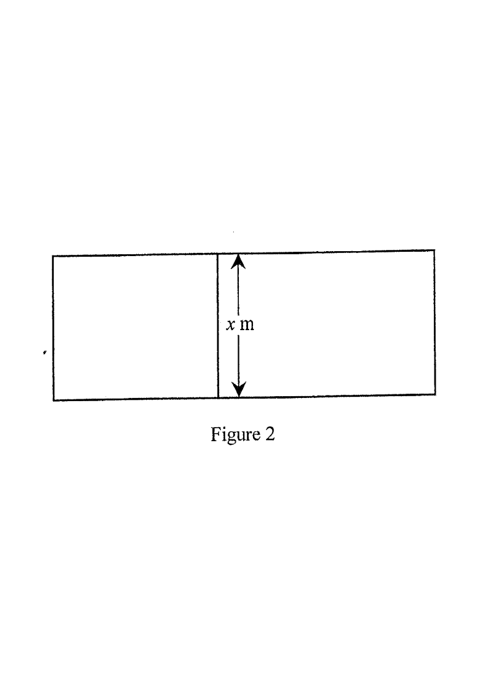

Left: the string-and-zone set-up. Right: graph of $y=f(x)$ / $y=A(x)$.
Scroll the solution to highlight each step.
Figure 2 — the string of length $x$ m divides the zone in two.
(a) Let $f(x)=36x-x^{2}$. Using the method of completing the square, find the coordinates of the vertex of the graph of $y=f(x)$. [2 marks]
(b) The length of a piece of string is $108$ m. A guard cuts the string into two pieces. One piece is used to enclose a rectangular restricted zone of area $A$ m$^{2}$. The other piece of length $x$ m is used to divide this restricted zone into two rectangular regions as shown in Figure 2.
(i) Express $A$ in terms of $x$. [4 marks]
(ii) The guard claims that the area of this restricted zone can be greater than $500$ m$^{2}$. Do you agree? Explain your answer.
